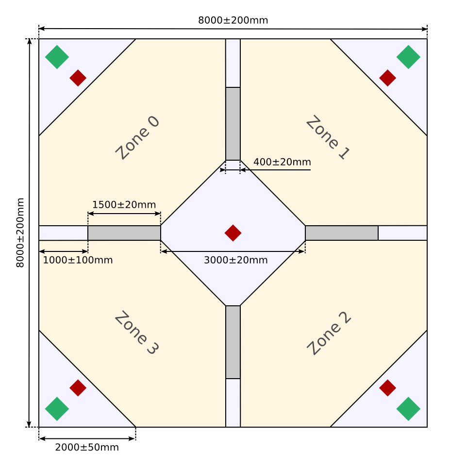

SR2015 Tech Day Quiz
Like school children…
Get into small teams, fetch some paper and assign a scribe.
Question 1
What are the dimensions of the arena, barriers and zones?

Question 2
“Why doesn’t my motor turn?”
Question 3
How heavy are flags?
Question 4
“How do I cut MDF?”
That's all folks!